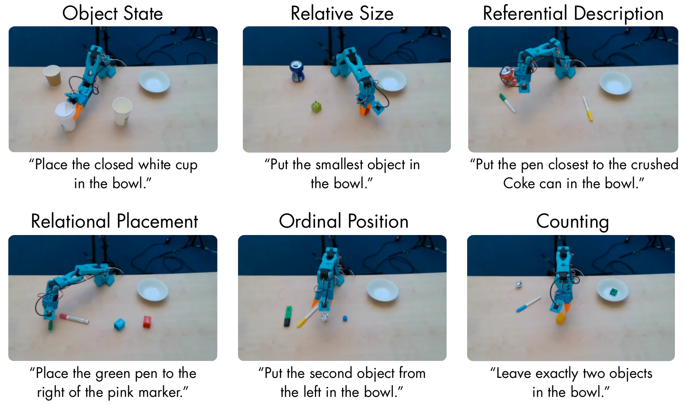
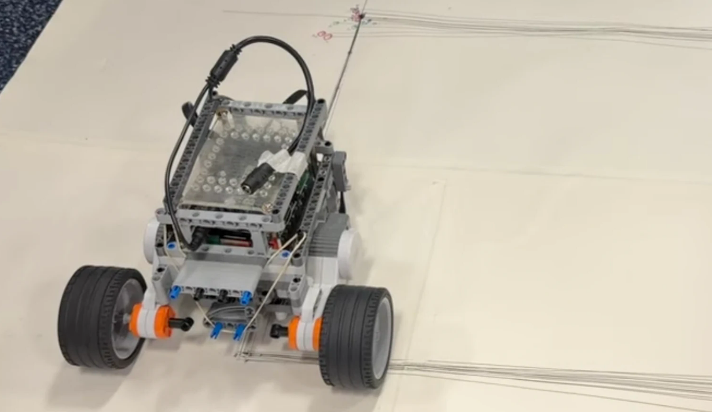
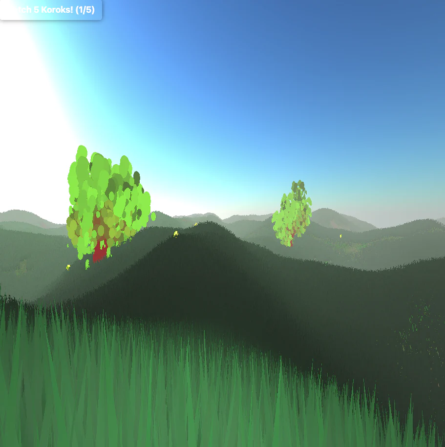
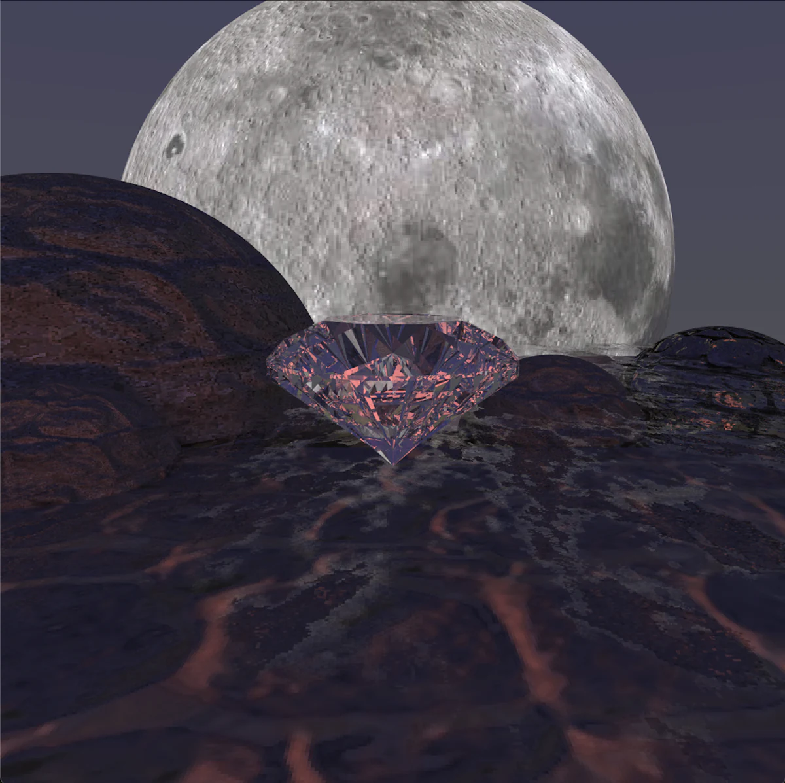
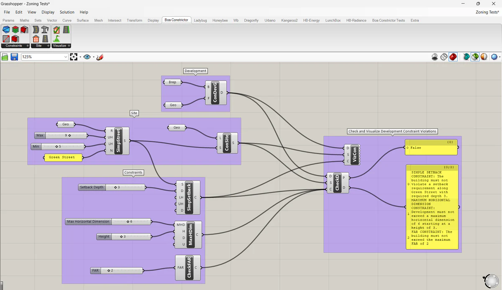
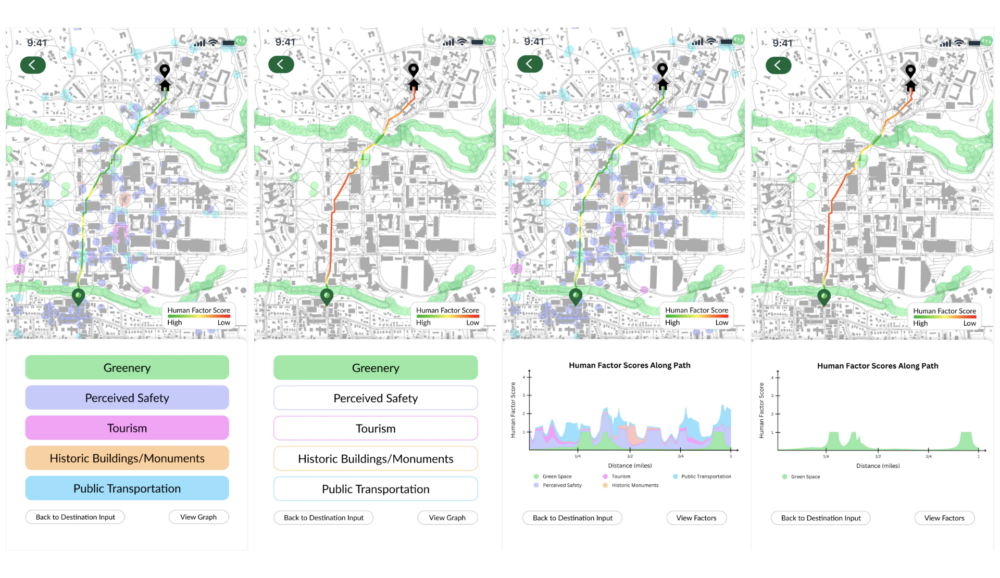
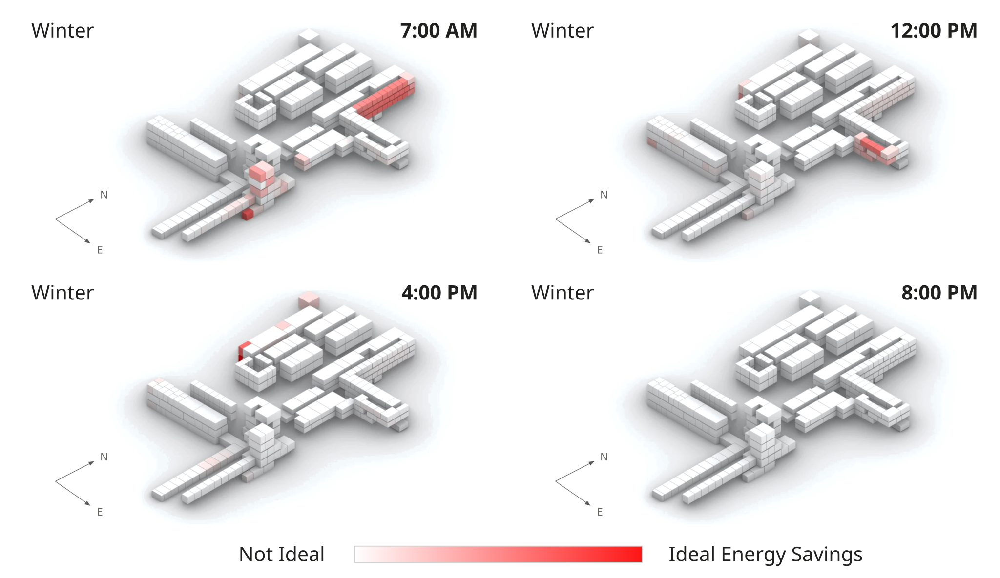

Spa-Bench: A Real-Robot Benchmark for Spatial Grounding in Vision-Language-Action Models
Evaluating how reliably vision-language-action models translate spatial descriptions into real-robot behavior. Under review at ICRA 2027.
Selected work in robotics, graphics, and computational design

Evaluating how reliably vision-language-action models translate spatial descriptions into real-robot behavior. Under review at ICRA 2027.

200-particle Monte Carlo localization, waypoint navigation, and vision-based obstacle avoidance on a Raspberry Pi / BrickPi robot.
With Felix Olesen, Matthew Pidden, and Haiwei Luo

An interactive 3D exploration game with infinite procedural terrain, L-system trees, and shader-driven grass.
With Evan Zhang and Ethan Lin

A parallel Monte Carlo path tracer in Python / Taichi, with refraction, texture and normal mapping, and BVH acceleration.
With Ethan Lin

A C# Grasshopper / Rhinoceros 3D plug-in for visualizing key New York City zoning constraints.
With John Wolford

Mapping perceived safety, visual interest, and exposure to greenery along urban walking routes.
With Alex Duncan, Danielle Fernandes, and Jaffa-Saah Goncalves

Solar-radiation analysis and classroom scheduling to use seasonally optimal spaces and reduce HVAC energy demand.
With Gabi Castro, Will Huey, and Wyatt Sullivan